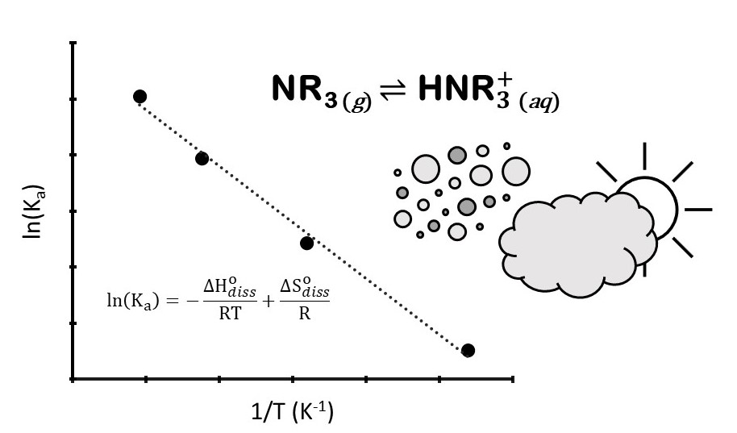

Wednesday, May 10th (AM)
Fate of the azole fungicide fluconazole in sunlit waters: kinetics, transformation products, and reaction mechanisms
William Fahy, Jonathan Abbatt, and Scott Mabury
The common antifungal pharmaceutical fluconazole is a persistent organic pollutant regularly found contaminating bodies of water around the world. Fluconazole can cause adverse health effects to at environmentally relevant concentrations and has been shown to inhibit the human cytochrome P450 system, which could slow metabolism of other xenobiotics and lead to synergistic toxic effects. Little is known about the environmental fate and transformations of fluconazole, although existing work on biodegradation and advanced oxidation processing indicates it is recalcitrant to many natural transformation pathways. Here we used the PhotoFate system to investigate the indirect photolysis of fluconazole in simulated sunlit freshwater environments. We estimate a half-life with respect to indirect photolysis in natural waterways ranging from around 5 to 25 days, with faster degradation observed with high concentrations of dissolved organic matter and/or nitrates. Transformation products have been identified and semi-quantified using liquid chromatography coupled to (high resolution) mass spectrometry with major products observed including multiple OH addition isomers, breaking of the bridging alkyl chain, and aromatic ring opening. Tentative structures and reaction mechanisms to produce those structures are proposed based on exact mass analysis, retention time analysis, and previous observations of hydroxyl and carbonate radical reactivities in aqueous solutions. Finally, the photoproduct mixture was tested for inhibition of the in vitro metabolism of bisphenol A by human cytochrome P450s. Our results indicate that fluconazole is persistent in natural waters and that slow natural indirect photolysis results in toxic and likely persistent transformation products.

Avoiding regrettable replacements: can the introduction of novel functional groups move PFAS from recalcitrant to reactive?
Andrew Folkerson and Scott Mabury
Per- and polyfluoroalkyl substances (PFASs) are a class of compounds present in a range of commercial and consumer products. These chemicals are often highly performing surfactants or non-stick/water repellant coatings due to their innate chemical stability; however, due to this stability select PFAS can be environmentally persistent. A novel group of commercial surfactant building blocks (F7C3-O-CHF-CF2-S-EtOH (FESOH), F3C-O-CHF-CF2-S-EtOH (MeFESOH), F7C3-O-CHF-CF2-O-EtOH (ProFdiEOH), F7C3-O-CHF-CF2-CH2-OH (ProFEOH), F3C-O-CHF-CF2-O-EtOH (MeFdiEOH)) have been developed with heteroatom linkages such as ethers and thioethers, and polyfluorinated carbons, to facilitate degradation. The differing degradation rates and products of these chemicals were investigated in an atmospheric chamber to investigate their behaviour to inform their fate in the environment. The complete fate of each molecule was studied through both online high-resolution mass spectrometry via chemical ionization time of flight mass spectrometry (CIMS-ToF), and off-line bubblers to extract any acidic products for targeted identification and quantification via ultra-high performance liquid chromatography-tandem mass spectrometry (UPLC-MS/MS). FESOH and MeFESOH, the two compounds with a thioether, were observed to have the shortest atmospheric lifetimes, through OH radical oxidation, of 4.03 and 5.24 days respectively. Interestingly, this additional trend of longer similarly structured species reacting faster holds true for the ether species as well (ProFdiEOH and MeFdiEOH). Additionally, by monitoring the OH radical reaction with the FESOH congeners through the CIMS, we can elucidate the identity of primary, secondary, and tertiary products, and the time course of their relative abundances. Terminal acid products quantification yielded PFPrA and shorter polyfluoroether acid species as the terminal products for FESOH and ProFdiEOH, however, MeFESOH demonstrated the propensity to completely mineralize, thus demonstrating the importance of introducing these novel functional groups.
Nitrous oxide profiles from the Canadian Atmospheric Laser Absorption Spectrometer Experiment Test-bed
Mark Panas and Jennifer Murphy
The Canadian Atmospheric Laser Absorption Spectrometer Experiment Test-bed (CALASET) project aims to produce high quality profiles of trace gases in the atmosphere using in-situ laser spectrometers on high altitude ballon platforms. Vertical profiles of trace gases are important for validating remote-sensing measurements. Two CALASET instruments for measuring greenhouse gases were flown in an August 2022 field campaign in Timmins, ON. Results from one of the spectrometers will be discussed here. This instrument is capable of measuring CO2 and N2O, but the CO2 retrieval was unsuccessful due to the choice of spectral window. Additionally, significant optical interferences and difficulty in predicting the laser background hampered the retrieval of gas concentrations. Nevertheless, N2O profiles from approximately 100 to 10 mbar were measured during the ascent and descent portions of the flight with a precision of 1.1 ppb. There was a significant offset between the ascent and descent mixing ratios of about 20 ppb. This may be partially attributed to differences in temperature of the atmosphere during the ascent and descent. These profiles were compared to profiles from the Microwave Limb Sounder (MLS) on the Aura satellite. There was significant disagreement between MLS and both the CALASET ascent and descent profiles, and the cause of the disagreement is still unknown.
Characterizing the oxidative potential associated with biomass burning aerosol from Canada
Bradley Isenor and Arthur Chan
With climate change on the rise, the looming threat of increased wildfires and their associated pollutants, particularly particulate matter (PM), is of great concern. These small, complex mixtures of chemicals, found in smoke and other aerosols, have been linked to numerous negative health effects and recent research suggests that PM from biomass burning may be significantly more harmful than PM from other sources. While the exact mechanisms through which PM causes harm are still under investigation, the dominating view is that their deleterious effects are primarily driven by their ability to trigger oxidative stress after inhalation. To date, little research has explored PM emitted from wildfires and even less on their abilities to induce oxidative stress (i.e., oxidative potential, OP). The focus of this research is to understand if and why PM emitted from wildfires are more harmful than PM emitted from other sources. To address this research question, the composition and OP of various biomass burning PM samples from the field and the lab will be characterized. The dithiothreitol assay will be used to measure the OP of PM and will be employed alongside the electron paramagnetic resonance to identify and quantify harmful environmentally persistent free-radicals and reactive oxygen species. Finally, a chemical analysis of the PM (e.g., organic carbon, elemental carbon, and levoglucosan content) will advance the understanding of the connection between biomass burning organic aerosol and human health.
Field observations of size-resolved particulate alkyl amines in urban Toronto during winter 2022-23
Xiaoying Yang and Jennifer Murphy
Mainly emitted from anthropogenic activities, amines are N-containing alkaline compounds that play an important role in enhancing new particle formation and growth, despite their relatively low abundance in the gas phase. From October 2022 to March 2023, size-resolved particulate amines were measured using an eleven-stage micro-orifice uniform deposition impactor (MOUDI) covering aerodynamic diameters from several microns down to 0.056 μm in 23 sets of multi-day observation periods. Samples were collected with cellulose and Teflon filters, but a positive artifact was observed for cellulose filters that needs to be further investigated. Dimethylamine and diethylamine were found to be predominant amines in urban Toronto, contributing 0.1~3% of water-soluble cation charges. Their mass loadings generally maximized at ~200 nm but were highest relative to ammonium in the smallest particles. Using simultaneous measurements of gas-phase ammonia and the solubilities of ammonia and amines, the range of gas phase concentration of dimethylamine was estimated to be 10-2 ~ 10-1 ppt, which could be relevant for new particle formation; while the gas phase concentration of diethylamine was estimated to be 10-4 ~ 10-3 ppt. This observation strategy will be optimized and applied for the following summer and winter measurements this year, to elucidate the urban budget of amines throughout the year.

Evaluation of adsorption isotherm models for determining the partitioning of ammonia between soil and soil-pore water in environmental samples and potential ammonia emissions sourced from Toronto’s urban greenspace
Matthew Davis and Jennifer Murphy
Ammonia in soil pore water (spw) is thought to participate in bidirectional exchange with the atmosphere; however, common soil nutrient analysis methods determine the bulk quantity of ammonia associated with the soil particles, rather than determining the spw ammonia concentration. To estimate the proportion of aqueous ammonia in soils, previous studies have applied the Langmuir and Freundlich isotherms to ammonia-enriched soils. In this work, environmental soil samples were collected from green spaces in Toronto and used to evaluate the Langmuir and Freundlich adsorption isotherm models to determine their applicability to non-fertilized soils. We found that both models can be used to represent the relationship between the amount of ammonium adsorbed to the soil, S (mg/kg), and the bulk quantity of ammonia in the extraction solution, C (mg/L), and thereby determine the ammonia emission potential of our soil samples. By combining the equilibrium vapor concentration associated with those emission potentials with our two-year atmospheric ammonia monitoring record, we investigated the parameters and conditions under which urban greenspaces would plausibly contribute ammonia to the atmosphere. With environmental policy focusing on controlling regional sources of ammonia, further research is needed on the potential local sources that may become more influential to urban air quality in the future.

Comparison of Langmuir (solid) and Freundlich (dashed) isotherms for fitting the adsorption isotherm curves of ammonium to an environmental soil sample.
Oxidation of bisphenol A via gas-surface ozonolysis: chemical transformation of a widespread organic pollutant
Jie Yu and Jonathan Abbatt
Although bisphenol A (BPA) is a widely used chemical in food packaging and plastic consumer products, it is also a well-known synthetic estrogen that can disrupt the endocrine system. In Canada, the use of bisphenol A is banned in baby products, so a set of alternatives – structurally similar to BPA – has been developed and used in “BPA-free” products. Research on alternatives’ safety is limited but there are indications that some may also be endocrine disruptive. The ubiquitous presence of BPA and its alternatives in ambient dust and aerosol samples suggests the potential for transformation via heterogeneous oxidation with atmospheric oxidants. However, studies on the environmental fate of BPA and its alternatives are incomplete, with uncertainties remaining in the loss kinetics of the parent chemicals and in the identities and the associated health impacts of the transformation products.
This study aims to address these uncertainties by studying the gas-surface ozone oxidation of BPA under atmospherically-relevant exposure conditions, with specific focus on kinetics and transformation mechanisms. Laboratory ozonolysis was conducted for 2.5-nm-thick BPA films in a flow reactor. Degradation of BPA and growth of four oxidation products compounds were analyzed offline by LC-ESI-MS. These results are supported by exposure experiments to genuine indoor air which contains ozone, where thin BPA films and thermal paper containing BPA both showed the appearance of the products observed in the flow reactor. These results will aid in the evaluation of BPA environmental fate pathways, future studies of the toxicity of these products, and prediction of the oxidation products of BPA alternatives.
The roles of temperature and pH in the gas-particle partitioning of ionizable organics in the atmosphere
Olivia Driessen and Jennifer Murphy
Atmospheric aerosols not only impact environmental and human health, but also affect the global climate through direct and indirect radiative forcing. Improved understanding of the roles played by individual atmospheric vapors in new particle formation and particle growth is required, particularly with shifting trends in anthropogenic emissions. Traditionally, the inorganic constituents sulfuric acid, nitric acid, and ammonia have been considered to dominate water-soluble secondary aerosol, but this project aims to examine the role of alkylamines and small organic acids in aerosol formation. Potentiometric titrations were performed to determine the temperature dependence of the acid dissociation constant of several amines, which is a key thermodynamic parameter needed to predict their gas-particle partitioning. Enthalpies of dissociation were measured for ammonia (53 kJ mol-1), methylamine (55 kJ mol-1), and ethanolamine (47 kJ mol-1). Gas phase amines are recognized as potent agents of new particle formation, but their propensity to partition into acidic aqueous aerosol limits their concentration in the gas phase. In contrast, weak organic acids are typically not considered to have a strong affinity for the aqueous aerosol phase relative to strong inorganic acids. However, as SO2 and NOx emissions decrease while emissions of NH3 are increasing, the potential for organic acids to partition into the atmospheric aqueous phase (cloud and aerosol) is growing. The gas-particle partitioning behavior of organic acids was probed using chemical partitioning space analysis that considers the role of excess ammonia in controlling aerosol and cloud pH.

Identifying and quantifying atmospheric sources of organic contaminants to the habitat of the St. Lawrence Estuary Belugas
Jenny Oh and Frank Wania
Persistent organic contaminants, such as the polychlorinated biphenyls (PCBs), have been shown to bioaccumulate in the Saint Lawrence Estuary Belugas (SLEBs) and may be impacting their health. Atmospheric deposition is often the dominant source of organic contaminants to aquatic ecosystems and is likely also important in delivering PCBs to the SLEB habitat. We quantified concentrations of organic contaminants for the SLEBs in air, water and atmospheric deposition using networks of passive air and water samplers across Quebec, coupled with active air and deposition samplers in Tadoussac. The passive air sampling (PAS) network encompassed the St. Lawrence River valley between Montreal and Quebec City as well as the shores of the estuary up to Sept-Îles and Sainte-Anne-des-Monts. Air concentrations of PCBs were elevated at most sites along the Montreal-Quebec City corridor, consistent with the region’s high population density and industrial history. Locally elevated levels also point to the existence of PCB sources to the atmosphere along the shores of the estuary (Sept-Îles) and in the Lac-Saint-Jean region (Alma). Conversely, the PAS network could exclude several electrical transformer stations as significant sources of PCBs to the atmosphere. The analysis of many PCB congeners allows us to employ multivariate statistical approaches to distinguish between PCB sources related to the use of technical PCB mixtures and those resulting from unintentionally produced PCBs. Combining our measurements with atmospheric dispersion and deposition calculations, driven by historical emission estimates, facilitates the estimation of the time-varying atmospheric input of PCBs to the habitat of the SLEBs.
Benchmarking a portable sensor for early warning monitoring of water quality
Zhuoyuan Li and Hui Peng
Microcystins (MCs) are toxic compounds produced by cyanobacteria during harmful algal blooms (HABs) in freshwater sources, which can pose significant health risks to humans including liver damage, respiratory paralysis, and mortality. HABs typically occur in summer and autumn due to environmental factors such as warm water, abundant sunshine, and nutrient availability. Human activities such as agriculture, urbanization, and industrialization have increased nutrient loads, including nitrogen and phosphorus, in freshwater systems, which can contribute to cyanobacterial dominance. Nitrate, an inorganic form of nitrogen, is commonly used as an indicator of cyanobacterial dominance due to its abundance and availability as a nitrogen source for cyanobacteria. The established method for measuring nitrate and MCs in surface waters is ion chromatography (IC) and mass spectrometry separately. There is a need for portable and on-site measurement methods.
In this study, a direct method using a prototype UV-VIS sensor system provided by our industrial partner AUG Inc. was employed to measure nitrate and humic acids levels in lake water samples by detecting full wavelength absorbance. The sensor results were cross-validated with laboratory testing using IC and High-Resolution Mass Spectrometry (HRMS). The findings showed that the UV-VIS sensor accurately measured nitrate levels but was not reliable for indirect measurement of MCs concentrations due to its low concentration. Ongoing research is trying to upgrade the UV-VIS sensor to achieve the direct measurement of MCs and other trace – level water contaminants.